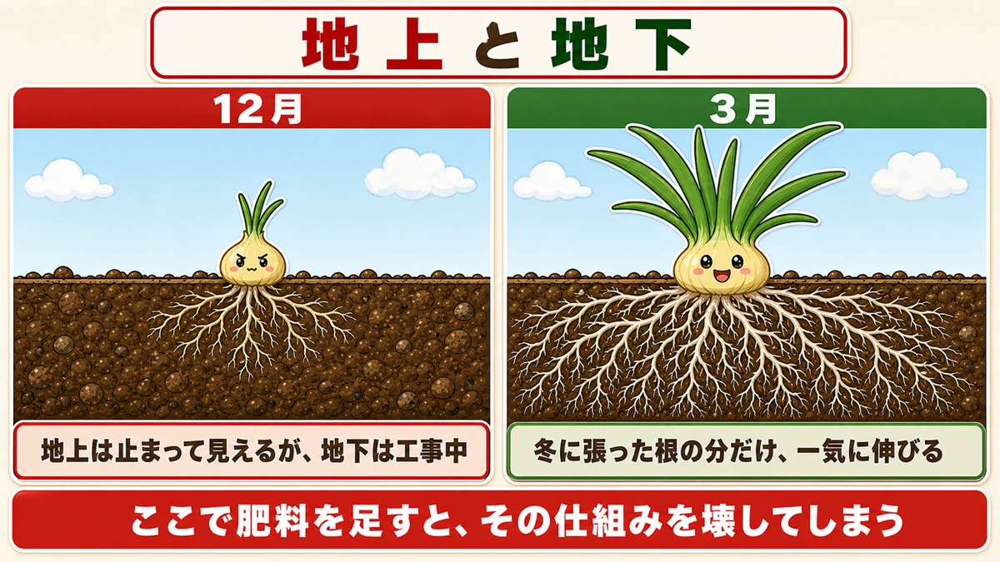
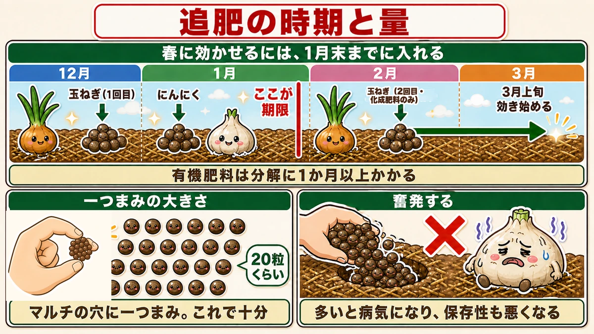
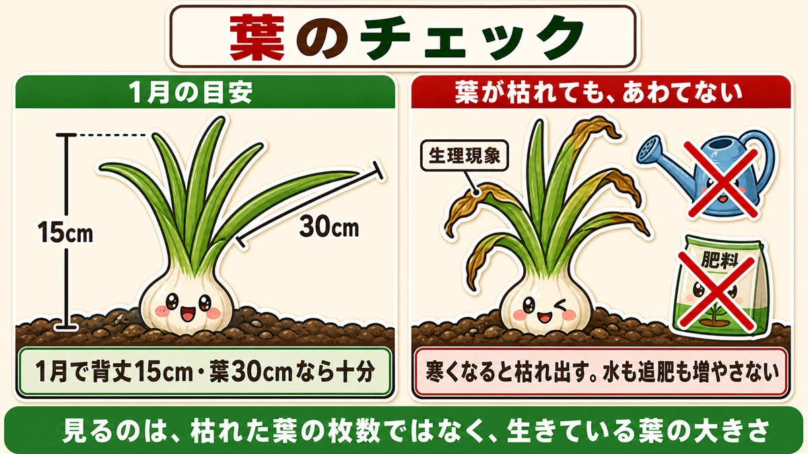
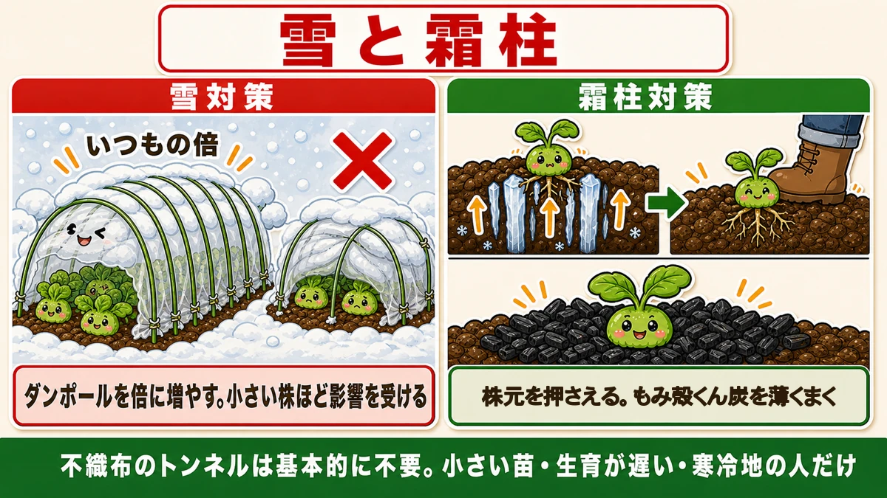
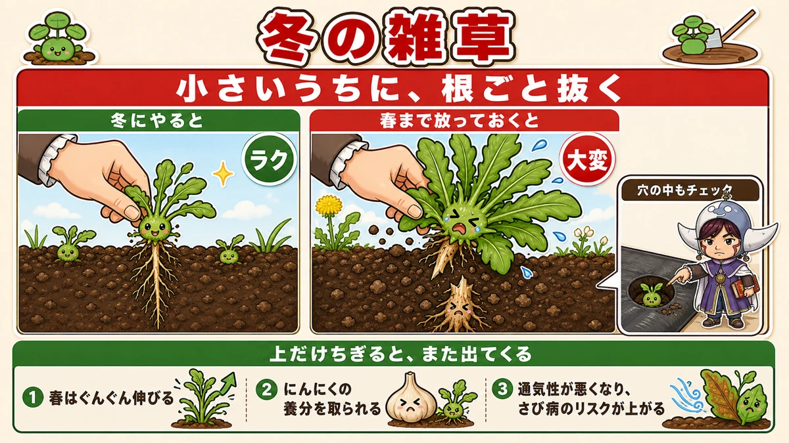
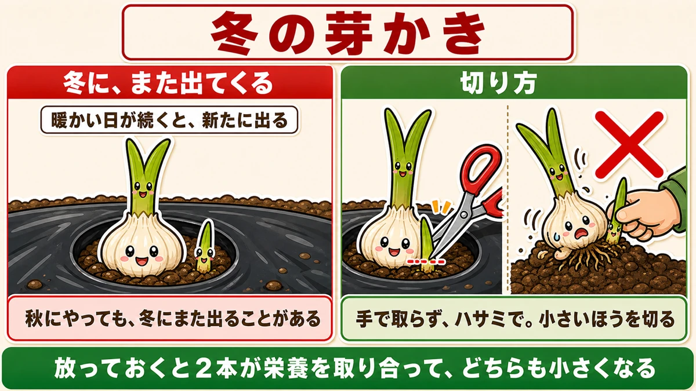
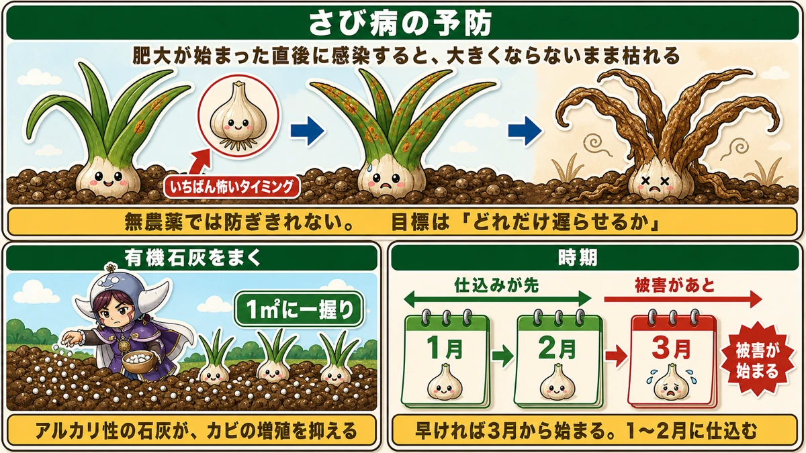
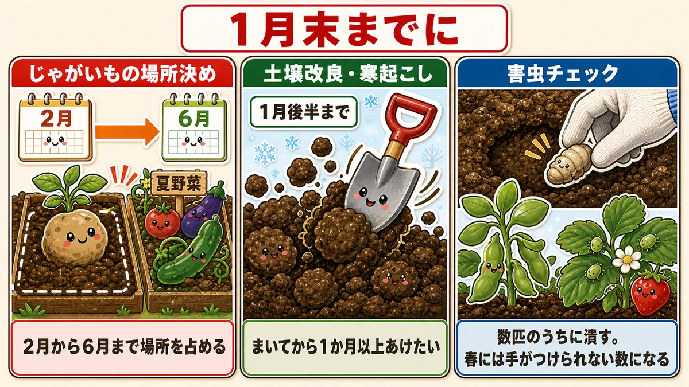

Don't feed them just because they're small 🧅 In winter, onions are building roots

🗨️ "My midwinter onions are tiny. Is that normal?"
🗨️ "I'm worried — maybe I should give them extra feed."
🗨️ "The garlic leaves are dying back. Is it diseased?"
Hello, I'm Eiko. Eight years of growing vegetables organically and without pesticides, and a teaching licence in science.
This one is about what to do with onions and garlic that are already in the ground, through the cold months.
The point, up front:
Don't add fertiliser just because they're small.
Stand in the garden in midwinter and you will worry. The onions you planted in autumn haven't grown at all. The garlic leaves are browning from the tips.
That is what it is supposed to look like.
Above ground it has stopped. Below ground, the roots are spreading. Whether a plant can shoot away in spring is decided by how much root it managed to build in winter — and feeding now breaks that mechanism ☺️
① Think of winter as building work

What this diagram says （図解の文字）
- Above ground and below ground
- Midwinter — above ground it looks stopped; underground it's a building site
- Early spring — it shoots away by exactly as much root as it built in winter
- Feed it now and you break that mechanism
Onions and garlic put almost nothing into top growth over winter. The energy goes into roots.
So small in midwinter is not a failure. It's the plan.
Then, as soon as it warms, they take off — releasing everything they banked.
What feeding does instead
"It's small, so it must be short of food." Entirely understandable, and the classic first-year move.
It invites disease.
Garlic growers have an expression for it: a "fat" garlic — overfed, swollen and unhealthy.
Too much feed means more disease, and worse keeping quality after harvest. You get a crop and it rots within weeks, which is genuinely dispiriting.
Garlic's feed is only a supplement
A piece of reasoning worth having: garlic grows on the energy stored in the clove itself. Its main supply is internal. A top-dressing is supplementary, not the engine.
Pile nitrogen onto that and you simply get a soft plant.
② When to feed, and how much

What this diagram says （図解の文字）
- Timing and quantity of the top-dressing
- To have it working in spring, it must go in by the end of midwinter
- Onions (1st) → garlic → the deadline → onions (2nd, synthetic feed only) → starts working in early spring
- Organic fertiliser takes over a month to break down
- How big "a pinch" is — about 20 granules. A pinch in the hole of the mulch is enough
- × too much and it bolts, gets diseased, and keeps badly
Onions
For maincrop varieties, the first top-dressing goes on in midwinter. If you use a synthetic feed, a second one follows about a month later.
- Poultry manure is easy to use — it acts quickly and keeps working. A bokashi feed is fine too
- Keep it away from the base of the plant, a little out, and only a light pinch
- Draw a little soil over it if you can
Garlic
One feed, in midwinter.
And the key point: put in during midwinter, it breaks down gradually and starts acting in early-to-mid spring.
So seeing no change is normal. Don't conclude it isn't working and add more. That is the doorway to overfeeding.
The amount, stated plainly:
One pinch, into the hole in the mulch.
A pinch means what you can lift lightly between three fingers — about 20 granules of poultry manure.
That will look absurdly small. It is enough. Being generous here makes things worse, not better.
The deadline
This applies to onions, garlic, spring cabbage and broccoli alike:
Any feed intended for spring must be in by the end of midwinter.
Because organic fertiliser takes time to break down. Plants wake from dormancy in early spring; to have the feed available then, work backwards — it needs to be in the ground about six weeks earlier. Put it in late and the release misses the window where it matters most.
(Synthetic feeds act faster, so they can go in later.)
③ What to look at: leaf size

What this diagram says （図解の文字）
- Checking the leaves
- Midwinter guide — 15 cm tall, 30 cm of leaf, and that's plenty
- Don't panic when leaves die back — it's normal. It starts as it gets cold
- × more water ／ × more feed
- Look at how big the living leaves are, not at how many have died
The garlic benchmark
In midwinter: about 15 cm (6 in) standing height, with the leaves themselves close to 30 cm (12 in).
If you have that, you're fine.
If it's clearly smaller than that, cover with netting or a low tunnel for warmth — small plants do sometimes fail to come through.
Browning leaves are normal
Through the coldest weeks, garlic leaves start dying back from the tips.
This is physiological, not disease. It starts as the cold sets in.
Don't respond by watering or feeding more. Look at the whole plant, not the dead leaves — not how many have browned, but how big the living ones are.
④ Snow and frost heave

What this diagram says （図解の文字）
- Snow and needle ice
- Snow — double the usual number of hoops. Small plants are affected most
- Needle ice — press the base of the plant down; scatter a little husk charcoal around it
- A fleece tunnel is basically unnecessary — only for small plants, slow growth, or a cold region
Snow
If snow is likely, build a cover from insect netting and flexible hoops.
The trick: use twice as many hoops as you normally would. Snow load collapses a tunnel — add two between each of your usual spacings and it holds.
Small plants suffer most, so if you can't cover everything, start with the bed of smallest plants.
Needle ice
Repeated hard frosts lift plants out of the ground. In the worst case the plant is standing completely proud, the roots dry out, and it dies.
Two fixes:
- Press the base down firmly — if it's lifted, push it back in there and then
- Scatter rice husk charcoal around the base
Plain rice husk works, but charcoal also supplies minerals and raises soil temperature. It is alkaline, though, so don't overdo it — a faint darkening around the base is plenty. Some blows about in the wind; it only goes to the next plant, so it doesn't matter.
You probably don't need a fleece tunnel
Reassurance: a plant of reasonable size rarely lifts and dies. Fleece tunnels are for people who have planted small plants, have plants that are behind, or live somewhere cold. Otherwise don't bother.
⑤ Winter weeding decides spring

What this diagram says （図解の文字）
- Winter weeds — pull them small, roots and all
- Easy in winter ／ left until spring, hard work ／ check inside the mulch holes too
- Tear off just the top and it comes back
- 1 they grow fast in spring ／ 2 they take the garlic's nutrients ／ 3 air movement drops and rust risk rises
Unglamorous, and it works. Pull the small weeds while it's still cold. Three reasons:
- They grow fast once spring arrives — pulling them small is far easier
- Garlic is a hungry crop. You don't want the weeds taking it
- Weeds reduce air movement, which raises the risk of rust
And the important part: pull them with the roots and they don't regrow. Tear the top off and they will. Winter soil is soft, which is exactly when roots come out whole.
Check inside the holes of the mulch and right up against the plants, not just the edges of the bed. That's where the small ones hide.
⑥ Check the garlic for a second shoot

What this diagram says （図解の文字）
- Winter shoot removal — they come again in winter
- A run of mild days brings new ones ／ doing it in autumn doesn't mean it won't happen again
- How to cut — × not by hand. Use scissors, and cut the smaller one
- Left alone, the two compete and both end up small
If you grow garlic, this is easy to miss. You removed the weaker of two shoots in autumn — and assumed that was that.
A run of mild days in winter can produce a new one. And a clove that started slowly may send up its second shoot late.
Cut it when you find it
Left alone, the two compete through the bulking period and both finish small.
- Use scissors, not fingers — pulling damages the whole plant
- Cut the smaller of the two
Same job as the autumn one. The only new thing is not assuming it's finished. Miss it and you'll notice in spring, by which point that plant is already small.
⑦ Rust: set up the defence in midwinter

What this diagram says （図解の文字）
- Preventing rust
- Infection just as bulking starts is the worst timing — it dies without ever swelling
- Without sprays you can't prevent it outright. The aim is to delay it
- Apply organic lime — a handful per square metre. Alkaline lime suppresses the fungus
- Preparation first, damage later — midwinter, then late winter, then early spring when damage starts
Garlic's main enemy. Rust is a fungal disease — rust-coloured spots on the leaves that spread until the plant dies.
The frightening part: infection just after the bulb starts to swell means it dies without ever swelling. Six months of growing, finished a few weeks from the end.
Being honest about it
Without sprays, you will probably get it. So the target isn't zero — it's how long you can delay it. Hold out until bulking is finished and you have a crop.
What to do
Apply organic lime.
The reasoning: rust is a fungus, and alkaline lime is held to suppress its spread.
- Timing: midwinter to late winter
- A handful per square metre, spread evenly
Why then? Because damage can begin as early as the first warm weeks of spring, and once it's started it's too late. Set it up while it's still cold. That, I think, is the trick to growing garlic without sprays.
Other jobs with the same deadline

What this diagram says （図解の文字）
- Before the end of midwinter
- Decide where the potatoes go — they occupy the ground from late winter to early summer
- Soil improvement and rough digging — you want a month between applying and planting
- Pest check — squash them while there are a few. By spring the numbers are unmanageable
- Decide where the potatoes go. Seed potatoes appear in late winter, and the crop holds that ground until early summer — so plan around the summer crops
- Finish soil improvement and rough digging, leaving at least a month before anything is planted
- Check for pests — dig out pupae in the soil, and squash the aphids on broad beans and strawberries
That last one matters more than it sounds. A handful of aphids in winter is an unmanageable population by late spring. Dealing with the handful is the most efficient control there is.
The science: why excess nitrogen causes disease 🔬
Science lesson — and everything above runs through it.
The cells become watery
Nitrogen is building material, so plenty of it means good growth. But of a particular kind: high nitrogen produces large, watery cells.
A cell grown in a hurry has thin, soft walls. And soft tissue is easy for a fungus to enter.
In human terms: well fed, heavy, and catching every cold going. Nutrition isn't the problem; too much of it weakens the defences.
So bigger is not better
Garlic growers put it bluntly: an oversized garlic rots easily.
For a show, fine. For eating, a firm medium bulb is the best thing — it keeps far longer and the flavour is stronger.
Winter feed is aimed at spring
And the timing. Organic fertiliser only becomes available to the plant after soil microbes have broken it down, which takes over a month.
So feed applied in midwinter starts acting in early spring — precisely when the plant wakes and starts growing hard.
You aren't feeding to get an effect now. You're feeding to get an effect in two months. It's a backwards calculation — which is why the deadline falls where it does.
To sum up
- ✅ Small is fine. Don't feed. Stopped above, building roots below, ready to shoot in spring
- ✅ "You can add what's missing; you can't take out what's excessive." When in doubt, less
- ✅ Onions in midwinter, garlic in midwinter. A pinch in the mulch hole — about 20 granules
- ✅ Deadline: end of midwinter. Organic feed takes a month-plus to become available
- ✅ Garlic benchmark: 15 cm tall, 30 cm of leaf
- ✅ Tip browning is normal. Judge by the living leaves
- ✅ Double the hoops before snow
- ✅ Press lifted plants back in; a dusting of husk charcoal helps
- ✅ Weed small, roots and all — including inside the mulch holes
- ✅ Check garlic again in winter for a second shoot, and cut it with scissors
- ✅ Rust: organic lime, a handful per square metre, while it's still cold
- ✅ Excess nitrogen makes soft, watery tissue that fungi enter easily
You don't have to do all of it. The one thing worth doing today is nothing — look at the small onions and leave the fertiliser where it is 🧅
Thank you for reading!